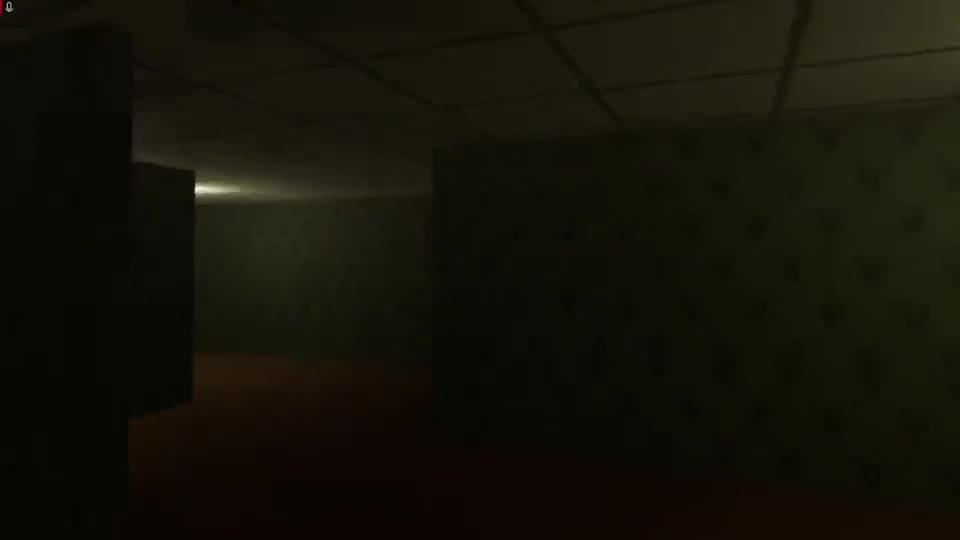

All projects
The game design case studies come first. Below them are earlier game prototypes, web projects from my studies and some digital art.
Game design case studies
 Released
ReleasedFall 'n Fashion
Puzzle-runner with endless procedurally generated worlds and seeded, learnable levels.
- Procedural generation
- Gameplay programming
- UI / level select
 Beta
BetaConquest Rush
Lane strategy roguelite across five ages, with counters, perks, bosses and a War Chest meta layer.
- Strategy
- Progression
- Balancing
 Work in progress
Work in progressProject Implant (working title)
First-person horror-stealth game: invisible enemies, a reality flash and a fair detection model.
- Stealth systems
- Level design
- GDD
 Showcase
ShowcaseJIM: hybrid escape room
A simulated operating system combined with printed evidence. The puzzles only solve when both halves meet.
- Puzzle design
- Narrative
- Unity UI
Earlier game projects & prototypes

American Dream
A VR horror game about the pressure of a 9-to-5 job, where your boss chases you.

Shiba Rhythm Birthday Fiesta
My first game engine project: a browser rhythm game with note lanes and timing windows.

Gesture-controlled game
I trained a k-NN model on hand gestures and used it to play a webcam game.

Type Racer
A typing-speed game with live accuracy, WPM and a local leaderboard.
Web & full-stack
Alle projecten
Eerst de case studies over game design. Daaronder eerdere game-prototypes, webprojecten uit mijn studie en wat digitale kunst.
Case studies game design
UitgebrachtFall 'n Fashion
Puzzle-runner met eindeloze, procedureel gegenereerde werelden en geseede levels die je kunt leren.
- Procedurele generatie
- Gameplay programming
- UI / level select
BètaConquest Rush
Lane strategy roguelite door vijf tijdperken, met counters, perks, bosses en een War Chest als meta-laag.
- Strategie
- Progressie
- Balancing
In ontwikkelingProject Implant (werktitel)
First-person horror-stealthgame: onzichtbare vijanden, een reality flash en een eerlijk detectiemodel.
- Stealth-systemen
- Level design
- GDD
ShowcaseJIM: hybride escaperoom
Een gesimuleerd besturingssysteem gecombineerd met geprint bewijs. De puzzels lossen pas op als beide helften samenkomen.
- Puzzelontwerp
- Narratief
- Unity UI
Eerdere gameprojecten & prototypes
American Dream
Een VR-horrorgame over de druk van een 9-tot-5-baan, waarin je baas je achtervolgt.
Shiba Rhythm Birthday Fiesta
Mijn eerste project in een game-engine: een ritmespel in de browser met noot-lanes en timing.
Gebaren-gestuurd spel
Ik trainde een k-NN-model op handgebaren en gebruikte het om een webcamspel te spelen.
Type Racer
Een typesnelheidsspel met live nauwkeurigheid, WPM en een lokaal leaderboard.
Web & full-stack

Open Hiring
Een toegankelijk vacatureplatform: ik bracht pagina's naar WCAG AA en bouwde een feature voor lokale bedrijven.

EcoJourney
Een mobiele webapp die barcodes scant en laat zien hoe duurzaam een product is, met gamification.

Digitale kunst
Tekeningen die ik in Photoshop maak, en die ook helpen bij concept art en 3D-modelleren.